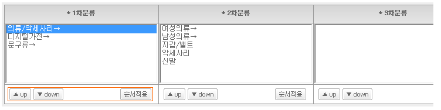
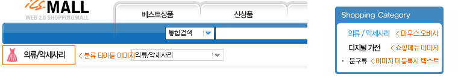

01. 1차분류생성
A. 1차분류 입력 : 생성할 1차분류명을 입력 하시면 됩니다.
B. 하위분류 유무 : 하위분류가 있을 경우 있음으로 없을 경우 없음으로 선택 하시면 됩니다.
! 분류상세 정보는 분류 수정에서 분류 타이틀 이미지나 메뉴 이미지등 등록 하실 수 있습니다.
02. 2차분류생성
A. 1차분류 선택 : 생성할 2차분류를 생성할 1차분류를 선택 하시면 됩니다. (1차분류에서 하위분류 있음일 경우만 나타 납니다)
B. 2차분류 입력 : 2차분류명을 입력 하시면 됩니다.
C. 하위분류 유무 : 하위분류가 있을 경우 있음으로 없을 경우 없음으로 선택 하시면 됩니다.
! 분류상세 정보는 분류 수정에서 메뉴 이미지등 등록 하실 수 있습니다.
03. 3차분류생성 / 1,2차 분류 수정
A. 분류 선택 : 3차분류를 생성 하실 1, 2차 분류를 선택하거나 수정/삭제 하실 분류를 선택 하시면 됩니다.
B. 선택된 분류 : 분류를 수정/삭제 하실 경우 선택된 분류를 확인 하시고 '분류수정'을 누르시거나 '분류삭제'를 누르 시면 됩니다. (분류 삭제는 하위분류 없음 상태일 때만 삭제 가능 합니다. 하위분류가 있는경우 하위분류 없음으로 수정 하시고 삭제하시면 됩니다.)
C. 3차분류 입력 : 생성할 3차분류명을 입력 하시면 됩니다.
! 분류상세 정보는 분류 수정에서 메뉴 이미지등 등록 하실 수 있습니다.
! '▲ up', '▼ down' 버튼으로 순서변경 후 '순서적용' 버튼을 누루시면 분류 출력 순서를 변경 할 수 있습니다.
! '→'마크는 하위분류가 있음을 나타 냅니다.

04. 분류 수정 (분류선택 후 더블클릭을 하시거나 분류수정을 누르시면 분류수정 창이 나타 납니다.)
A. 수정할 분류명 : 수정할 분류명을 입력 하시면 됩니다.
B. 링크주소 : 해당분류의 링크 주소가 나타 납니다.
C. 사용상태 설정 : 사용상태가 미사용(일시중지)일 경우 해당 분류뿐만 아니라 해당 분류의 모든 상품이 쇼핑몰에 나타나지 않습니다.
D. 분류 출력순서 : 쇼핑몰에 출력될 분류출력 순서를 입력 하시면 됩니다.
E. 품절상품 제일뒤로 : 품절된 상품을 리스트 제일 뒤에 나타나게 하려면 선택 하시면 됩니다.
F. 접급권한 설정 : 해당분류를 접근할수 있는 등급을 선택 합니다. 접근권한은 하위 상품에도 같이 적용됩니다.
G. 하위분류 유무 : 하위분류가 있을 경우 있음으로 없을 경우 없음으로 선택 하시면 됩니다.
H. 분류 타이틀 이미지 :쇼핑몰에서 분류메인페이지나 상품페이지에 나타날 타이틀 이미지를 넣으시면 됩니다.
I. 쇼핑메뉴 이미지1 : 쇼핑몰 분류에 나타날 이미지를 올리시면 됩니다.
J. 쇼핑메뉴 이미지2 : 쇼핑메뉴 이미지1에 마우스를 올렸을때 변할 이미지를 올리시면 됩니다.
! 스킨에 따라 사이즈가 다를 수 있으니 확인 후 맞는 사이즈로 작업하셔서 올리시기 바랍니다.
